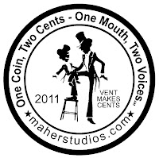

TWO CENT COIN (Side 1)
5/2/2011
{kind=link}

Here's a sneak peek at the "obverse" (front) of the new two cent coin. It features the distinctive Maher/NAAV logo and the phrase, "One Coin, Two Cents - One Mouth, Two Voices". The phrase was submitted by Andy Mrkvicka. Andy's initials are embossed on the coin following the winning phrase and he will also receive ten free coins as his prize.
The coin is dated 2011 and bears a side phrase, "Vent Makes Cents".
This coin is the same size as my Dummy Dollar Collector coins, but will be much less expensive to purchase. They have been purposely designed so they can be used by any ventriloquist as a prize or give-away, presented appropriately as YOUR "two cents".
The coin is dated 2011 and bears a side phrase, "Vent Makes Cents".
This coin is the same size as my Dummy Dollar Collector coins, but will be much less expensive to purchase. They have been purposely designed so they can be used by any ventriloquist as a prize or give-away, presented appropriately as YOUR "two cents".
The web link maherstudios.com rounds out this side of the the coin. Tomorrow I'll show you the artist's rendering of side two (historic and unique) and also tell you how EACH OF YOU can receive one sample coin FREE!